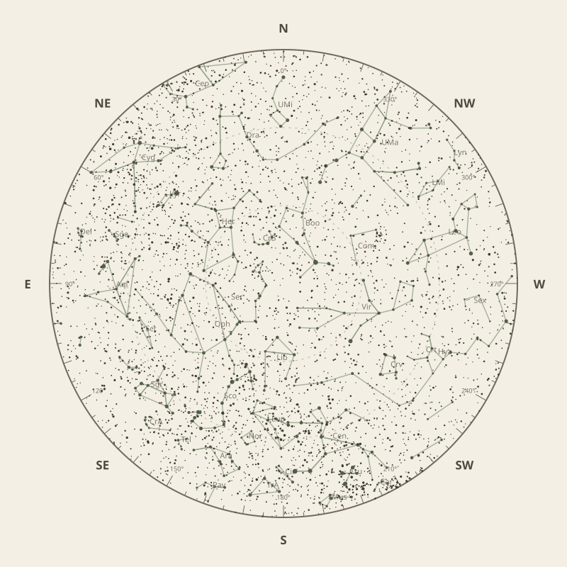

← Annual almanac


North is at the top; east is at the left. Solar System objects shown are above the horizon at 10 pm.
Monthly field almanac
June 2026
Galactic Centre viewing is best on 15 Jun 2026, from 8:44 pm to 4:44 am, reaching 50°.
- New Moon
- 15 Jun Darkest skies
- Full Moon
- 1 Jun Brightest skies
- Best dark window
- 12 Jun 10h 26m
Current conditions
Checking the sky near Malabar Coast, India…
Sky chart: 15 Jun 2026, 10 pm
Malabar Coast, India local time.
Show static monthly chart

Night planner
Choose a date to see astronomical darkness, Moon interference, Galactic Centre visibility, and planet altitudes and times.
Best low-Moon dark periods this month
- 7:13 pm–5:39 am10h 26m · 21% Moon
- 7:14 pm–5:39 am10h 26m · 13% Moon
- 7:14 pm–5:40 am10h 26m · 6% Moon
June highlights
- Milky Way
Milky Way core window
4h 17m with 50° altitude.
- Minor planets
3 Juno
65° altitude; magnitude 10.0.
- Planets
Neptune
Best monthly date at 75° altitude.
- Planetary events
Mercury greatest eastern elongation
Evening sky; 24.5° from the Sun.
- Occultations
HIP 82458 lunar occultation
1:31 am; Moon at 49° altitude for the first listed contact.


Moon phases
100%
62%
0%
52%
98%
Low illumination favours faint targets. Bright lunar targets are best near full Moon.
Download Moon phase CSV →

Galactic Centre sessions
- 8:44 pm–4:44 am8h 00m · core to 50°
- 8:25 pm–4:25 am8h 00m · core to 50°
- 8:53 pm–4:53 am8h 00m · core to 50°


Planet visibility
Evening
- Jupiter1 Jun · 7:30 pm32° · Good
- Venus30 Jun · 7:30 pm30° · Good
- Mercury15 Jun · 7:30 pm14° · Poor
 Jupiter
Jupiter Venus
Venus Mercury
MercuryPredawn
- Neptune30 Jun · 5:30 am75° · Excellent
- Saturn30 Jun · 5:30 am69° · Excellent
- Mars30 Jun · 5:30 am27° · Good
- Uranus30 Jun · 5:30 am25° · Fair
 Neptune
Neptune Saturn
Saturn Mars
Mars Uranus
UranusEvents
- 3 Juno65° altitude; magnitude 10.0.
- Mercury greatest eastern elongationEvening sky; 24.5° from the Sun.
- HIP 82458 lunar occultation1:31 am; Moon at 49° altitude for the first listed contact.


Data and downloads
Positions are unavailable for 2 comet entries.
Occultation times use a smooth lunar limb; confirm grazing events with IOTA Occult 4.